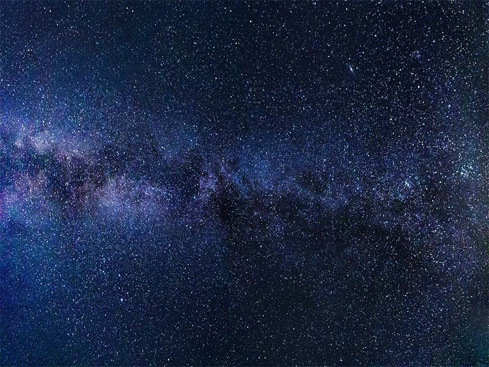

La galaxia de la Vía Láctea, o simplemente la Vía Láctea, es una galaxia espiral donde se encuentra el sistema solar y a su vez se encuentra la Tierra. Según las observaciones, posee una masa de 1012 masas solares y es una espiral barrada. Su diámetro medio se estima en unos 100 000 años luz, equivalentes a casi un trillón y medio (1,42×1018) de kilómetros o 9480 millones de unidades astronómicas. Se calcula que contiene entre 200 000 y 400 000 millones de estrellas. La distancia desde el Sol hasta el centro de la galaxia es de alrededor de 25 766 años luz (7900 pc), es decir, el 52 % del radio total galáctico. La Vía Láctea forma parte de un conjunto de unas cuarenta galaxias llamado Grupo Local, y es la segunda más grande y brillante tras la galaxia de Andrómeda (aunque puede ser la más masiva, como lo muestra un estudio reciente).
El nombre Vía Láctea proviene de la mitología griega y en latín significa camino de leche. Esa es, en efecto, la apariencia de la tenue banda de luz que atraviesa el firmamento terrestre, y así lo afirma la mitología griega, explicando que se trata de leche derramada del pecho de la diosa Hera (Juno para los romanos). Rubens representa la leyenda en su obra El nacimiento de la Vía Láctea. Sin embargo, ya en la Antigua Grecia, el astrónomo Demócrito (460 a. C.-370 a. C.) sugirió que aquel haz blanco en el cielo era en realidad un conglomerado de muchísimas estrellas demasiado tenues individualmente como para ser reconocidas a simple vista. Su idea, no obstante, no halla respaldo hasta 1609 cuando el astrónomo italiano Galileo Galilei hace uso del telescopio y constata que Demócrito estaba en lo cierto, ya que a donde quiera que mirase, aquel se encontraba lleno de estrellas.
La Vía Láctea comenzó como una o varias pequeñas regiones de sobredensidad en la distribución másica del universo poco después del Big Bang. Algunas de estas regiones eran las semillas de los cúmulos globulares, en los que perduran las más antiguas estrellas que formaron la galaxia. Estas estrellas y cúmulos constituyen en la actualidad el halo estelar de la Vía Láctea. Tras unos pocos miles de millones de años después de las primeras estrellas, la masa de la galaxia era lo suficientemente grande como para que diera vueltas con relativa rapidez, lo que, debido a la conservación del momento angular, condujo a que el medio gaseoso interestelar colapsase de una forma más o menos esférica a un disco plano. Por lo tanto, las siguientes generaciones de estrellas se formaron en este disco espiral. La mayoría de las estrellas jóvenes, incluido el Sol, se encuentran en este disco.
Desde el momento en que comenzaron a formarse las primeras estrellas, la Vía Láctea ha crecido mediante fusiones de galaxias (sobre todo al principio) y la acreción de gas del halo galáctico.22 La Vía Láctea está en la actualidad aumentando su masa con sus dos más cercanas galaxias satélite, la Gran Nube de Magallanes y la Pequeña Nube de Magallanes, mediante la corriente de Magallanes. La acreción directa de gas se constata en nubes de alta velocidad como la nube de Smith.2324 Sin embargo, propiedad de la Vía Láctea como la masa estelar, el momento angular y la metalicidad de sus regiones más externas sugieren que no ha sufrido fusiones con grandes galaxias en los últimos mil millones de años. Esta ausencia de grandes fusiones recientes es inusual entre galaxias espirales similares; su vecina, la galaxia de Andrómeda, parece tener una historia más típica con fusiones más recientes con galaxias relativamente grandes.
Según recientes estudios, la Vía Láctea así como Andrómeda se encuentran en lo que se conoce como valle verde dentro del diagrama color-magnitud, una región poblada por galaxias en transición de la nube azul (galaxias con formación activa de nuevas estrellas) a la secuencia roja (galaxias que carecen de formación estelar). La formación de estrellas en las galaxias del valle verde va desacelerando a medida que se quedan sin gas en el medio interestelar. En simulaciones galácticas con propiedades semejantes, esta formación habrá desaparecido en unos cinco mil millones de años, incluso teniendo en cuenta el incremento a corto plazo en la tasa de formación por la colisión entre la Vía Láctea y Andrómeda.27 De hecho, las medidas en otras galaxias similares a la Vía Láctea sugieren que esta está entre las galaxias espirales más rojas y brillantes que todavía forman nuevas estrellas y que es solo ligeramente más azul que las galaxias más azules de la secuencia roja.
Hammer, F.; Puech, M.; Chemin, L.; Flores, H.; et al. (2007). The Milky Way, an Exceptionally Quiet Galaxy: Implications for the Formation of Spiral Galaxies. The Astrophysical Journal 662 (1): pp. 322-334.
Mutch, S.J.; Croton, D.J.; Poole, G.B. (2011). The Mid-life Crisis of the Milky Way and M31. The Astrophysical Journal 736 (2): pp. 84-95.
Licquia, T.; Newman, J.A.; Poole, G.B. (2012). What Is The Color Of The Milky Way?. American Astronomical Society.
{kind=link}